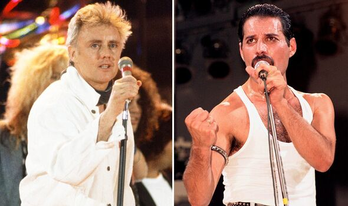

Dos quatro integrantes do Queen, três atuaram efetivamente nos vocais. O vocalista e pianista Freddie Mercury gravou a maior parte deles, mas Roger Taylor possuía importante participação nas vozes da banda. O baterista, por vezes, gravou partes mais agudas de algumas músicas utilizando falsete, como "In the Lap of Gods" e "Ogre Battle" e seu timbre rouco é geralmente comparado ao do cantor Rod Stewart. Brian May, por sua vez, é tido como um cantor que possui, em sua voz, uma suavidade que muitos não possuem. John Deacon é o único que nunca gravou nenhum vocal para o grupo, e suas canções foram todas interpretadas por Freddie. Segundo o próprio, não sabe cantar, e em uma entrevista ocorrida em 1986, o baixista lamentou sua incapacidade. "[...] é como estar em uma cadeira de rodas de certa forma, porque você não pode realmente se expressar da maneira que você gostaria. Se eu pudesse cantar, seria lindo. Não é uma [simples] desvantagem, é uma grande desvantagem, em termos de escrever canções. Gostaria que eu pudesse, mas eu não posso." Mercury, por sua vez, tinha uma extensão vocal que abrangia cerca de quatro oitavas e possuía facilidade tanto para notas graves e agudas. A revista Rolling Stone escolheu "Bohemian Rhapsody", "We Are the Champions" e "You're My Best Friend" como as canções que contém as melhores interpretações vocais dentro de toda a sua carreira.
